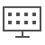

Logon_console 내용
- INTERACTION Built-in softphone that support Omni-Channel within the INTERACTION menu
- REPORT All the reports of the center can be accessed within the REPORT menu
- MONITORING Real time reporting that support for multiple refresh rates based on different types of statistics within the MONITORING menu
- MANAGEMENT Resource managing tools of the center within the MANAGEMENT menu
- SCENARIO Call flow customizing tools that providing best service within the SCENARIO menu
- CAMPAIGN Outbound system tools that have ability to schedule, manage and monitor campaign within the CAMPAIGN menu
- KMS/AGENT SCRIPT Agents tools to support efficient replies like knowledge management, push URL, canned response within the KMS/Agent menu
- WALLBOARD  Real time reporting tools optimized for wallboard within WALLBOARD menu
-
MASTER
 It is a counseling console that can cope effectively with multi-channel
It is a counseling console that can cope effectively with multi-channel